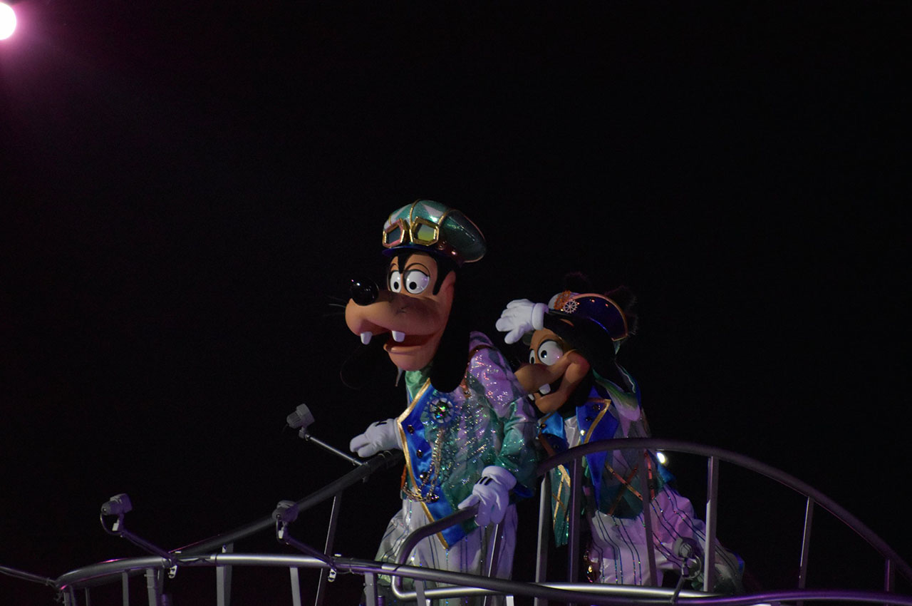
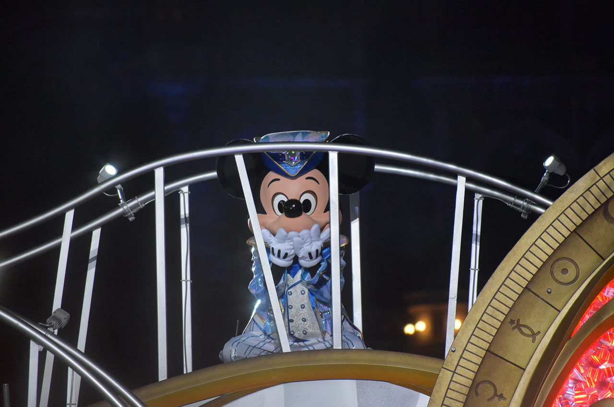
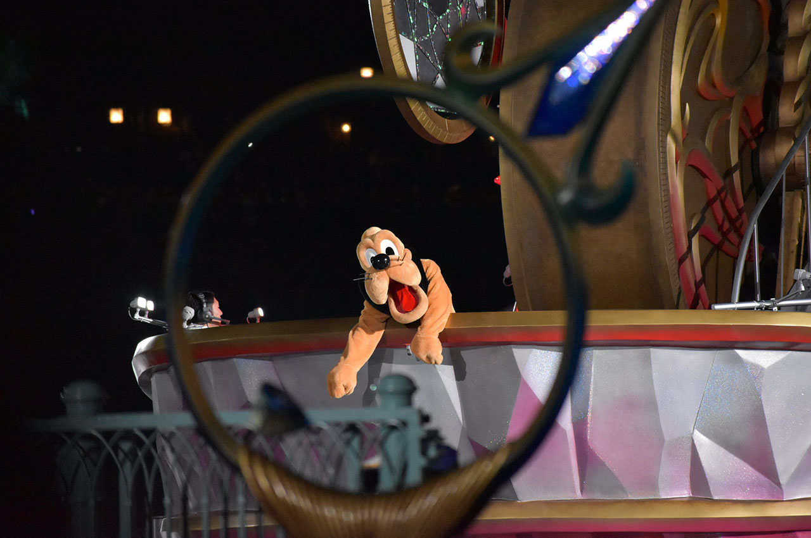

クリジャに見るミッキーパイセンのぐう畜ポイント
東京ディズニーシー (TDS) 開園15周年記念ショーである「クリスタルウィッシュジャーニー」、略してクリジャ (CWJ) を観ていて、ミッキーパイセンなかなかの畜生だなと思ったところを挙げていく。
ついでにクリジャの写真を「Nikon D5600 + AF-P DX NIKKOR 70-300mm f/4.5-6.3G ED VR」で撮っていたので載せてみる。元の JPG は 6000x4000px と巨大なので、縮小し、若干画質を落としている。リサイズ以外の画像編集は行っていないので、「この程度の機材だとこの程度の写真が撮れる」という参考にしていただければと思う。
写真の下には「撮影日 - シャッタースピード、絞り値、ISO、焦点距離 (35mm 換算時の焦点距離)」を記載している。
音源を聴きながらドウゾ
音源を聴きながら、ミッキーパイセンのぐう畜ポイントをおさらいしよう。
2017-01-15 - 1/400 sec, f/11, ISO-500, 300mm (450mm)
↑「俺が主役や！！」と吠えるミッキーパイセン
のっけから責任転嫁
ドナルド「ｷﾞｬﾞｰｰ!! ｳﾞｨﾞﾝﾞﾀﾞｰｰｰｰ!!! (やぁー！みんなー！)」
全員「こーんにーちはー！」チップ「いよいよ、出発ダヨー！」
デール「楽しみだなぁ〜！」
ミッキー「ワ～クワクするねぇ〜！」
ミニー「ステキなことが起こりそう！」
プルート「ワンワンッ、ワォーン！」
マックス「さーあ！旅の始まりだ〜！」
グーフィー「イェーイ！ ところで、旅ってどこに行くの？」……
全員「(；´ﾟдﾟ｀)ｴｴｰｰｰｰｯ!?」
ミッキー「そういえば、どこだろう？」
ミニー「ミッキー、知らないの？」
ミッキー「えーっとぉ…それはぁー、先頭のドナルドがー…」 ←ｺｺ!!
ドナルド「ｴﾞｪﾞｰ!? ｳﾞｫｸﾞｰ、ｼﾞﾗﾞﾀﾞｲﾞﾖﾞｰ!? ﾜﾞﾜﾞﾜﾞﾜﾞ、ﾁﾞｮﾞﾄﾞ、ﾄﾞｳﾞｼﾞﾖﾞｩﾞー!? (えぇー！ぼく、知らないよぉー！？ワワワワ、ちょっと、どうしよう〜！？」
デイジー「ちょっとドナルド、落ち着いて！」
もう本当にひどい。明らかにミッキー主導なこの旅の、行き先を決めてない責任を他人に擦り付けてる。
しかもミッキーは出発直前に失態に気付いたのか、責任転嫁しやすくするため先頭にドナルドを配置し、あたかも彼が勝手に始めた旅であるかのように偽装したのだ。
きっとドナルドは、イントロ直前にミッキーから「おいアヒル、お前先行けよｗｗ」と言われ、挨拶の音頭も急遽ドナルドがとることになったのだろう。緊張のあまり、出だしの「みんなー！」から判別不可能なぐらいに上ずってしまっている。そして行き先未決な大失態の濡れ衣を着せられ、ドナルドは喉を潰してしまったのである。
2017-01-15 - 1/400 sec, f/9, ISO-500, 300mm (450mm)
↑狼狽えるドナルドさん
ミニーもこの悪事に加担しており、「ミッキーは知らないの？」と先に振ることで、「ミッキーも知らされていない = ミッキーが行き先を決めた人物ではない」と観客に思わせているのだ。
ドナルドの隣にいたデイジーは一連の悪事に気付いたのかもしれないが、相手はディズニーの中心人物。「あんたが決めてねえのかよ！」とは言えず、ひたすらに喉を潰したドナルドを慰めるしかできないのであった。
なお、グーフィーは天然で「どこに行くの？」と言ったのだろうが、息子のマックスは全てを察しており、「おいバカ親父！そんなこと言ったらミッキーパイセンが何にも考えてないのバレちまうだろ！そうなったら俺たち酷い目に遭わされるんだぞ…ッ！」と言わんばかりにグーフィーをド突いており、グーフィーは毎度船から落とされそうになっている。

2017-01-15 - 1/400 sec, f/6.3, ISO-5000, 300mm (450mm)
↑バカ親父の暴走を止めようとするマックス青年。がんばれ。
あまりにも皆に無関心
クリスタルレッド「みんなのクリスタルは、どんな色かな？」
(みんなの願いや希望を思い思いに発表する)
ミッキー「素敵な願いがいっぱいだね。
でも、それとボクたちの旅とどういう関係があるの？」
ミッキーパイセンのご機嫌を損ねないよう、当たり障りのない建前の願いを口にしながら、「ミッキーの呪縛から解放された暁にはこんな夢を叶えたい」と暗に祈る一同。
そんな彼らをよそに、「素敵やん (棒)」と無関心なミッキーさんは、「ほんでコイツらの願いとか俺に何の関係があんの？」とバッサリ。
さすがのクリスタルレッドさんもこれには苦笑い。
2017-01-15 - 1/400 sec, f/14, ISO-500, 280mm (420mm)
↑ミッキーパイセンともなれば、真面目にやってるダンサーさんにちょっかいを出してもお構いなし。誰も逆らえない。
強欲
無関心なミッキーに諭すように。
クリスタルレッド「…ミッキー、キミのクリスタルがその答えだ」
ミッキー「ボクの？ えっと……僕のクリスタルは、透明だね」
クリスタルレッド「そして今、キミの心にある願いは？」ミッキー「それは……
- 大好きな仲間たちと、楽しい旅を続けたい！
- ドキドキする冒険や、
- 新しい発見をしたり、
- 素敵な思い出をいっぱい作って、
- みんなを元気にしたい！」
ミニー「まぁ、たくさんあるのね。みんなの願いが集まっているみたい！」
「お前だけ多い！！」と、一つずつしか願いを発表しなかった一同は思ったことだろう。ミッキーだけ歌も歌わないし。
これにはさすがのミニーも苦笑い。「(あなただけ) たくさんあるわね」と少し嫌味をこめるが、すぐに怖くなってフォローを入れるあたり、ミッキーさんミニーにも手上げてるな…。
2017-01-15 - 1/400 sec, f/13, ISO-500, 130mm (195mm)
↑中央に立つピノキオを見て (ガキが俺より目立つんじゃねえぞ…) と眼力を送るミッキーパイセン。このあと1枚目のようにセンターを奪還。
「違う」とは言えず
クリスタルレッド「赤・青・緑がひとつになれば、光は白く輝く！」
ミッキー「そうか！ミニーの愛情、ドナルドの友情、グーフィーの元気、全部が集まっているから、僕のクリスタルは透明なんだね！」
「『白だ』つってんだろ！！」とは誰も突っ込めず。
ミッキーのクリスタルは「透明である」から、みんなのクリスタルの色を透過させることで、結果「白い輝き」が生まれるのだ、とクリスタルレッドさんは言おうとしてるのに、
ミッキーさんは「みんなの色が集まったから」ぼくは「透明」と解釈している。
明らかに因果が逆だ。
そもそもみんなは何かしら色が付いてるのにミッキーだけ無職 (無色) なのを、クリスタルレッドさんの必死のフォローで色付けてやろうとしているのに、人の話もロクに聞かず何やら満足している。だから無職 (無色) なんやろ…。
しかしクリスタルレッドさんもミッキーには逆らえず、
クリスタルレッド「……そのとおり！！」
と屈してしまっている。しかしさすがに頭にきたのか、以降、ミッキーとクリスタルレッドさんは口をきいていない。
2017-01-15 - 1/400 sec, f/8, ISO-500, 300mm (450mm)
↑(もうコイツに何か言うの止めとこ…) と冷ややかな視線を送るクリスタルレッドさん。
行き先は勝手に決める
クリスタルレッド「願いとは心の道しるべ。希望への輝き、長く果てしない旅の支えだ。それがひとつに集まれば、皆が力を合わせて助け合えれば、どんな困難な旅でも乗り越えられるだろう。」
クリスタルレッド「いよいよ旅立ちの時が来た。一人ひとりの様々な願い、それぞれの思いを、このクリスタルにこめて！」
クリスタルレッドさんは結局、「どこに行くのか」は明言していない。「願いは旅の支え」であり、「クリスタルに託そう」というところまでしか話していない。
が。
ミッキー「さぁ、出発しよう！きらめく海へ！」
この一言で海に出ることが決まってしまった。S.S. コロンビア号の隣あたりから海に出るつもりなんだろうか。

2017-01-15 - 1/320 sec, f/6.3, ISO-5000, 300mm (450mm)
↑ショーなんて片手間、ふざけきるミッキーパイセン。
さらにその直後。
ミッキー「ミニー、僕たちの旅の行き先が分かったよ！どんな地図にも載っていないけど、でも、誰でも行けるはず！」
ミニー「それはどこ？」
ミッキー「つまり、未来だよ！」
また漠然としちゃったｗｗｗ ｡ﾟ(ﾟ^ω^ﾟ)ﾟ｡ 本当に何を言っているのでしょう。
もうミニーもゲンナリです。
ミニー「未来…。…そうね、ミッキー！」

2017-01-28 - 1/400 sec, f/6.3, ISO-6400, 300mm (450mm)
↑ミッキーパイセンには逆らえないミニー女史。
他のメンツはもう言葉も発してません。呆れ果てたのでしょう。「黙って付いてかないとボコられるからな…」と諦めムードです。

2017-01-28 - 1/400 sec, f/5.3, ISO-6400, 190mm (285mm)
↑この中で唯一服を着せてもらえていないプルートもグッタリ、「助けてくれ～～」と言っています (嘘)
結論
やはりミッキーはぐう畜。
でも好き。
クリジャほんま最高なんだよなぁ…。
2017-01-15 - 1/400 sec, f/13, ISO-500, 300mm (450mm)
↑ミッキーよ永遠なれ。
↓ショー全体を CD 化したものはコチラ。

↓「シャイン・オン！」バージョンは以下に入ってるらしいです。